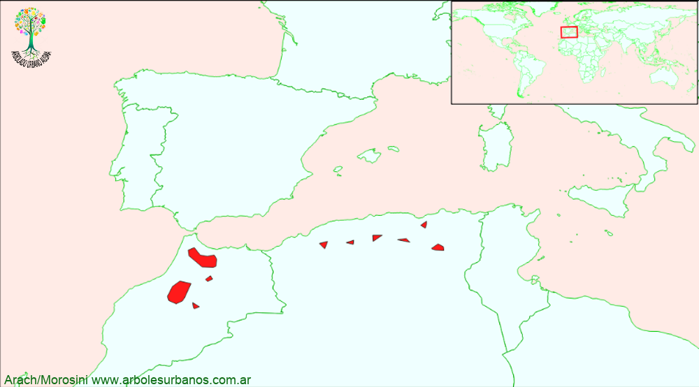

Click en las imágenes para ampliar

{kind=link}
{kind=link}
- NOMBRE CIENTÍFICO
- Cedrus atlantica Var. “Glauca”
- FAMILIA BOTÁNICA
- Pináceas
- DESCRIPCIÓN GENERAL
- Es un árbol de gran tamaño, alcanzando a veces 40 metros. Copa piramidal con sus ramas principales con marcado crecimiento ascendente. Su corteza es gris clara lisa en su juventud, en los árboles maduros escamosa. Sus hojas son acículas cortas, de hasta 2.5 cm. de largo reunidas en braquiblastos, de color gris azulado.
- ESTROBILOS
- Los estróbilos aparecen en otoño, los masculinos amarillos y cilíndricos, los femeninos de color verdoso, erguidos, luego de ser fecundados alcanzan los 10 cm. de largo son cónicos ovalados, de color pardo a veces purpúreo, pueden tardar hasta 3 años en madurar, luego se desarman para liberar sus semillas, que son aladas como la mayoría de las semillas de las pináceas.
- ORIGEN
- Su área de dispersión natural, es el norte de África, más precisamente Marruecos y Argelia sobre los montes Atlas (de ahí su nombre)
- USOS
- Su madera es muy apreciada, muy resistente y aromática. Muy difundido en todo el mundo como árbol ornamental.
- PARTICULARIDADES
- A veces es clasificado como una subespecie del Cedro del Líbano
Cedro Plateado, Pino azul
REPRODUCCIÓN: Normalmente se multiplica por semillas.